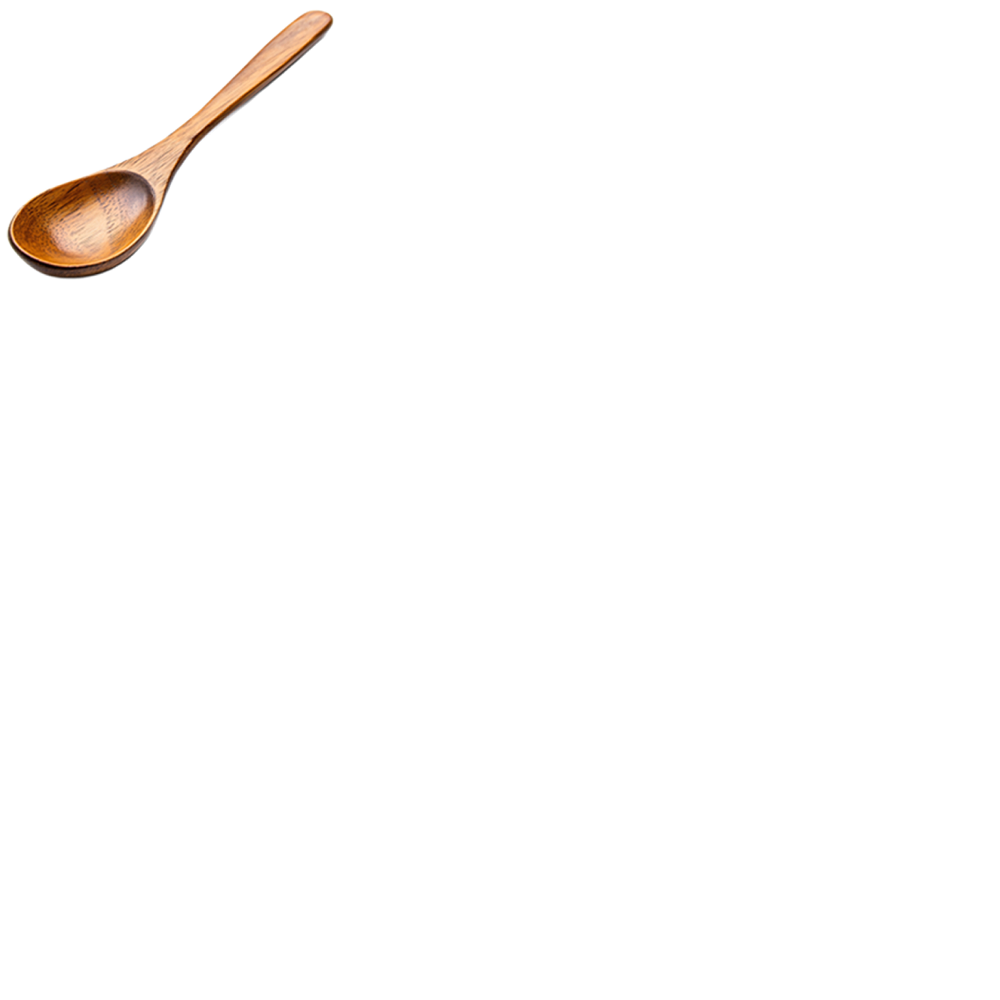

a spoon is not just a sustinence delivery method, but is also a metaphor for mental health. It was first coined by Christine Miserandino, she used spoons as a currency of sorts to help her spread her mental energy equaly
“I use it in GROWTH program because it was really important to me to give participants a tool to share what they’re going through because so many people say others don’t get it,”